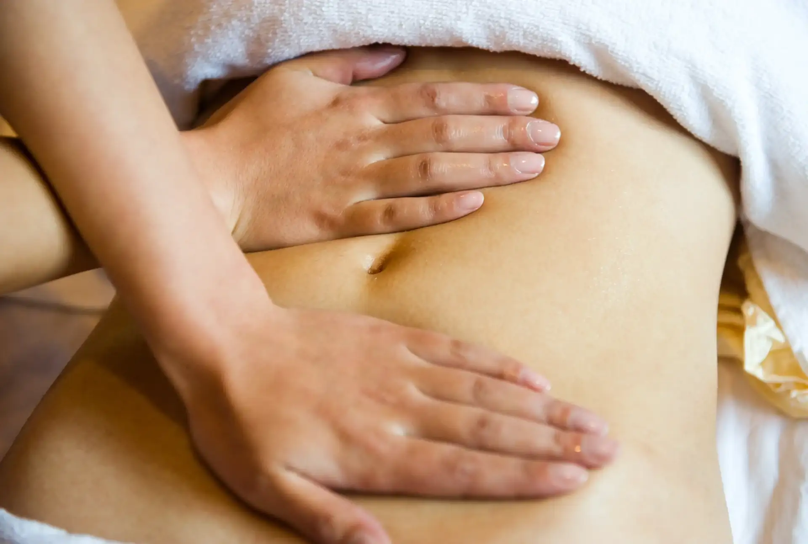

Le Qi Nei Zang est un massage spécifique de la zone abdominale plus particulièrement des viscères. L’expression signifie « travailler les organes internes ». En Médecine Traditionnelle Chinoise, l’intestin est responsable du tri entre « le pur » et « l’impur » ; entre ce qui doit être « gardé » et ce qui doit être « rejeté ». Notre nourriture, nos pensées et nos émotions passent par notre ventre. C’est pourquoi cette pratique participe à détoxifier l’organisme, aider les organes à travailler plus efficacement, libérer les énergies négatives concentrées dans l’abdomen et harmoniser les émotions.
Déroulement d’une séance
Après un bref entretien sur votre état physique général ainsi que sur les douleurs dont vous pouvez souffrir, vous serez allongé sur le dos sur une table de massage,ventre découvert. Vos réponses orientera le choix des mouvements à effectuer et les organes à stimuler. Tout au long de la séance, nous échangerons sur vos ressentis, ce qui va permettre de verbaliser vos émotions qui peuvent se manifester différemment, en fonction de votre histoire personnelle.
Une séance de Qi Nei Zang dure en moyenne 45min. Plusieurs séances peuvent être effectuées en fonction de vos besoins.